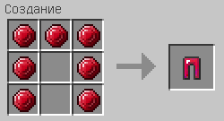
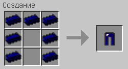

Claw's Armor Ideas Mod
Содержание
Блоки
Рубиновая руда
Рубиновая руда встречается на высоте 0-35 блоков по одному блоку в биомах "Тайга", "Мегатайга" и "Горы". Из руды выпадает 1 рубин.
Броня
Кожано-кольчужная
Изумрудная
Рубиновая
Сталелазуритовая
Крафты
Железнолазуритовый слиток
Ингредиенты: 1 железный слиток, 2 шт. лазурита
Бесформенный крафт
Сталелазуритовый слиток
Ингредиенты: 1 железнолазуритовый слиток
Кольчуга
Ингредиенты: 5 шт. огненного порошка
Ингредиенты: 8 шт. огненного порошка
Ингредиенты: 7 шт. огненного порошка
Ингредиенты: 4 шт. огненного порошка
Кожано-кольчужная броня
Ингредиенты: 3 шт. огненнного порошка, 2 шт. кожи
Ингредиенты: 5 шт. огненнного порошка, 3 шт. кожи

Ингредиенты: 5 шт. огненнного порошка, 2 шт. кожи
Ингредиенты: 2 шт. огненнного порошка, 2 шт. кожи
Изумрудная броня
Ингредиенты: 5 изумрудов
Ингредиенты: 8 изумрудов
Ингредиенты: 7 изумрудов
Ингредиенты: 4 изумруда
Рубиновая броня
Ингредиенты: 5 рубинов
Ингредиенты: 8 рубинов
Ингредиенты: 7 рубинов
Ингредиенты: 4 рубина
Сталелазуритовая броня
Ингредиенты: 5 сталелазуритовых слитков
Ингредиенты: 8 сталелазуритовых слитков
Ингредиенты: 7 сталелазуритовых слитков
Ингредиенты: 4 сталелазуритовых слитка
Изумрудные инструменты и меч
Ингредиенты: 2 изумруда, 1 палка
Ингредиенты: 3 изумруда, 2 палки
Ингредиенты: 3 изумруда, 2 палки
Ингредиенты: 1 изумруд, 2 палки
Рубиновые инструменты и меч
Ингредиенты: 2 рубина, 1 палка
Ингредиенты: 3 рубина, 2 палки
Ингредиенты: 3 рубина, 2 палки
Ингредиенты: 1 рубин, 2 палки
Сталелазуритовые инструменты и меч
Ингредиенты: 2 сталелазуритовых слитка, 1 палка
Ингредиенты: 3 сталелазуритовых слитка, 2 палки
Ингредиенты: 3 сталелазуритовых слитка, 2 палки
Ингредиенты: 1 сталелазуритовый слиток, 2 палки